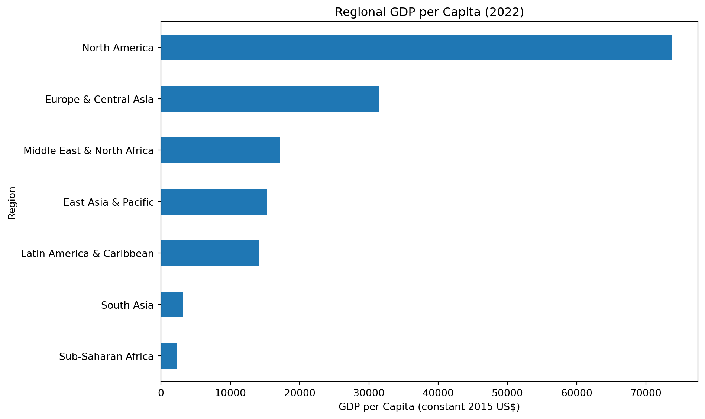
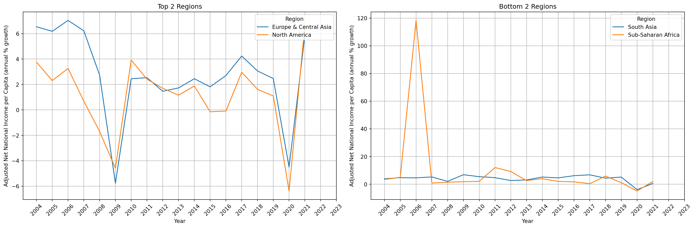
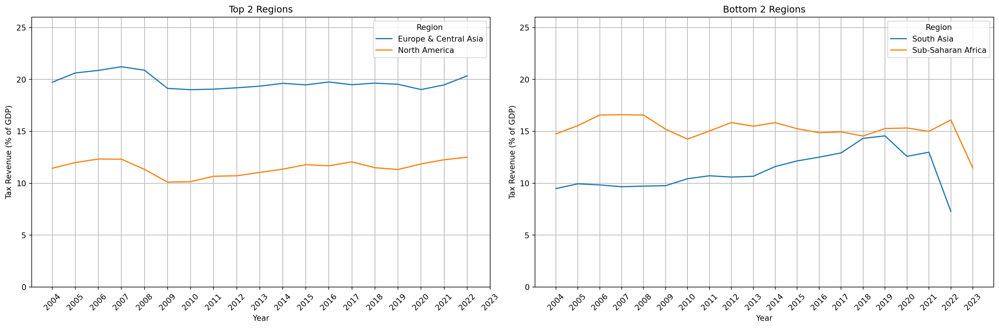
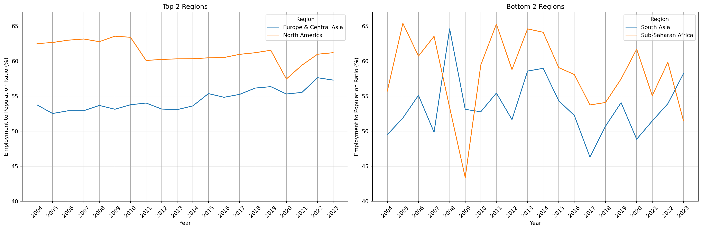
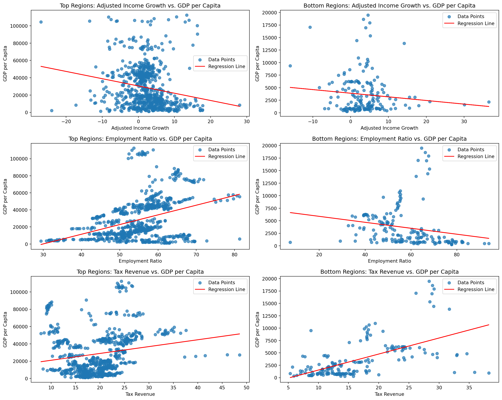

Analysis of Indicators
This analysis investigates regional differences across various indicators using cleaned datasets. The goal is to uncover trends and disparities to inform data-driven conclusions.
Choosing Top & Bottom Regions
Data Analysis & Visualizations
Adjusted Net National Income per Capita (annual % growth) from 2004-2023

<Figure size 672x480 with 0 Axes>Interpretation
The graphs show the trends in Adjusted Net National Income per Capita for the top-performing regions and the bottom-performing regions. Europe & Central Asia consistently shows higher growth rates compared to North America, indicating strong income growth dynamics in this region during the observed period. Sub-Saharan Africa and South Asia demonstrate slower progress compared to the top-performing regions.
Tax Revenue (% of GDP) from 2004-2023

<Figure size 672x480 with 0 Axes>Interpretation
The graphs compare the trends in Tax Revenue as a percentage of GDP. Europe & Central Asia and North America demonstrate more consistent revenue percentages, indicating that these regions have a greater reliance on taxation or they have a stronger fiscal capacity. Sub-Saharan Africa and South Asia show greater disparities over time which could suggest issues with tax collection or reliance on alternative revenue sources.
Employment to Population Ratio, 15+, total % (national estimate) from 2004-2023

<Figure size 672x480 with 0 Axes>Interpretation
The graphs show the trends in the Employment to Population Ratio for the top performing regions and the bottom performing regions. The employment-to-population ratio for North America and Europe & Central Asia are more generally more consistent than in Sub-Saharan Africa and South Asia. The fluctuations in the bottom 2 regions indicates challenges in sustaing employment levels relative to the population over time.

Interpretation
From the scatterplots, we observe that in top regions, GDP per capita shows a strong positive association with the employment-to-population ratio and a weaker but still positive relationship with tax revenue. In contrast, bottom regions exhibit weaker or negative associations for adjusted income growth and employment ratios, while tax revenue appears positively correlated with GDP per capita, indicating its importance in these regions. These patterns highlight differing drivers of economic performance across regions.
Regression Analysis
Final Regression Summary for Top Regions
OLS Regression Results
==============================================================================
Dep. Variable: GDP_per_capita R-squared: 0.217
Model: OLS Adj. R-squared: 0.214
Method: Least Squares F-statistic: 66.84
Date: Mon, 09 Dec 2024 Prob (F-statistic): 3.73e-38
Time: 22:40:49 Log-Likelihood: -8283.3
No. Observations: 727 AIC: 1.657e+04
Df Residuals: 723 BIC: 1.659e+04
Df Model: 3
Covariance Type: nonrobust
==========================================================================================
coef std err t P>|t| [0.025 0.975]
------------------------------------------------------------------------------------------
const -5.034e+04 6287.608 -8.007 0.000 -6.27e+04 -3.8e+04
Adjusted_income_growth -814.8262 149.074 -5.466 0.000 -1107.496 -522.157
Employment_ratio 1160.3191 98.361 11.797 0.000 967.212 1353.426
Tax_revenue 859.3198 142.932 6.012 0.000 578.709 1139.931
==============================================================================
Omnibus: 148.725 Durbin-Watson: 0.229
Prob(Omnibus): 0.000 Jarque-Bera (JB): 324.616
Skew: 1.113 Prob(JB): 3.24e-71
Kurtosis: 5.400 Cond. No. 465.
==============================================================================
Notes:
[1] Standard Errors assume that the covariance matrix of the errors is correctly specified.Interpretation
For top regions, GDP per capita is positively influenced by employment ratio and tax revenue, while adjusted income growth has a negative impact. The model explains 21.7% of the variation in GDP per capita, with all predictors statistically significant (p < 0.05).
Dropping variable 'Adjusted_income_growth' with p-value 0.5781723503520071
Dropping variable 'Employment_ratio' with p-value 0.43572331591362223
Final Regression Summary for Bottom Regions
OLS Regression Results
==============================================================================
Dep. Variable: GDP_per_capita R-squared: 0.336
Model: OLS Adj. R-squared: 0.332
Method: Least Squares F-statistic: 89.43
Date: Mon, 09 Dec 2024 Prob (F-statistic): 1.96e-17
Time: 22:40:49 Log-Likelihood: -1695.3
No. Observations: 179 AIC: 3395.
Df Residuals: 177 BIC: 3401.
Df Model: 1
Covariance Type: nonrobust
===============================================================================
coef std err t P>|t| [0.025 0.975]
-------------------------------------------------------------------------------
const -1699.4931 611.437 -2.780 0.006 -2906.137 -492.849
Tax_revenue 323.4066 34.199 9.457 0.000 255.916 390.897
==============================================================================
Omnibus: 48.330 Durbin-Watson: 0.330
Prob(Omnibus): 0.000 Jarque-Bera (JB): 118.055
Skew: 1.160 Prob(JB): 2.32e-26
Kurtosis: 6.232 Cond. No. 46.4
==============================================================================
Notes:
[1] Standard Errors assume that the covariance matrix of the errors is correctly specified.Interpretation
For bottom regions, only tax revenue significantly predicts GDP per capita, with a positive effect. The model explains 33.6% of the variation, as other variables (adjusted income growth and employment ratio) were excluded due to insignificance (p > 0.05).